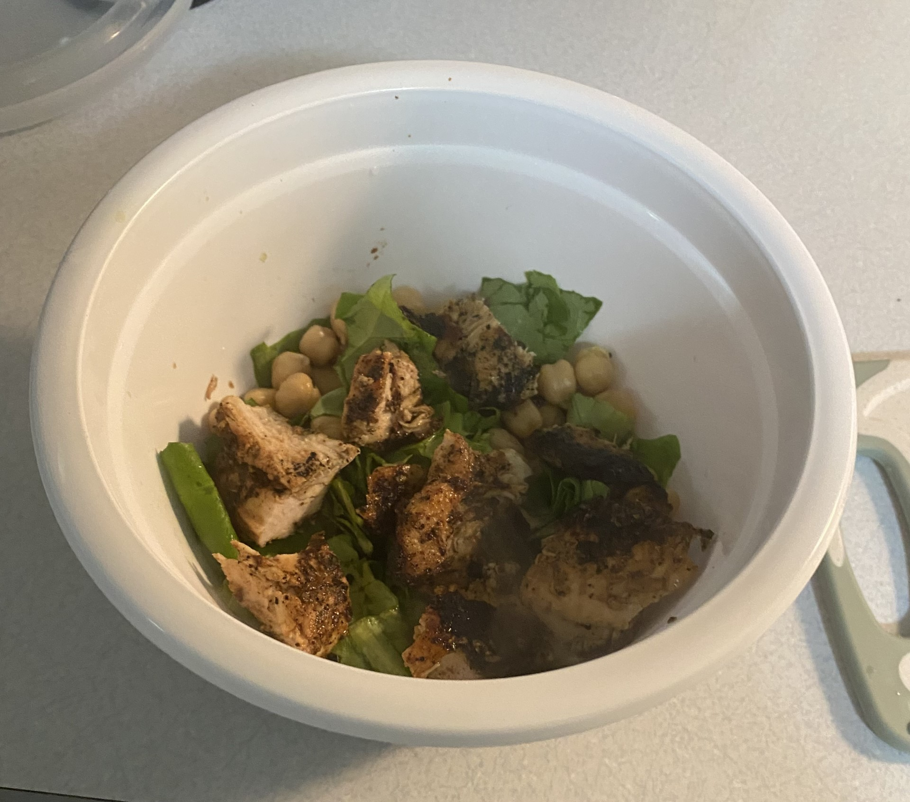

I choose to make a very simple chicken caeser salad recipe which ended up being very simple to make and was very good.
This was a really simple and good meal to make!
After making the chicken the night before it was a lot easier when I went to make this.
I also didn't follow any recipe I just cooked the chicken which was the same as the Tuscan Chicken recipe and didn't have to marinate it.
This was the fastest recipe I made and is a good quick meal!